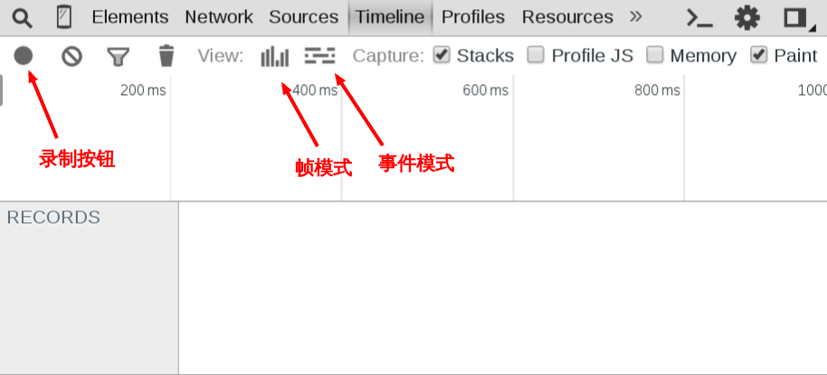
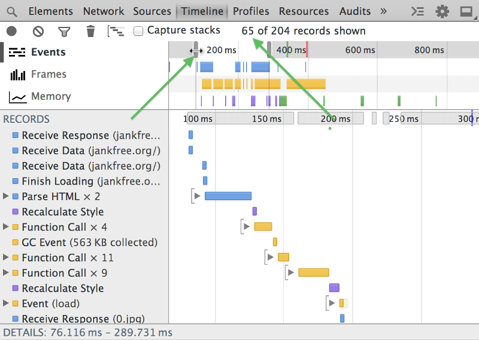
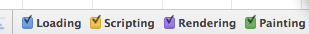
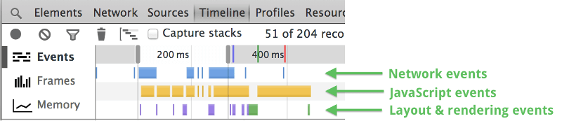
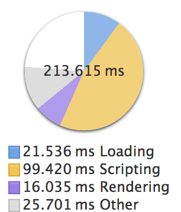

《高性能javascript》是高程作者的另一力作，终于借了本来读，同时做了篇读书笔记。
书中一共有十个章节，笔记包含了前八章和开发者工具Timeline面板介绍。(￣ー￣〃)
第一章：加载与执行
<script>标签放在body底部，确保脚本执行时页面完成渲染。- 合并
<script>标签减少http请求。 - 无阻塞下载模式：
<script>的defer属性，延迟到window.load事件后下载- dom操作动态创建
<script>标签，做lazyload。 - 利用xhr对象发起ajax请求向页面注入
<script>标签。
第二章：数据存取
- 函数通过作用域链来读写变量。所以位置越深的变量访问的时间就越长。访问对象的属性与方法依赖原型链，也是一个道理。所以应将多次访问的深层变量保存到局部。
- with([document])与catch(){}会临时添加作用域顶部，所以避免使用with。将catch里的处理交给函数，减少catch内的操作。
第三章：DOM编程
js通过DOM对象这座桥梁操作文档中的节点，所以DOM天生就慢。修改元素更为昂贵，因为他会导致浏览器重新计算页面的几何变化。想起很早以前js实现的一个动画……orz
减少DOM访问次数，多次访问请使用局部变量大法。
小心处理HTML对象集合，集合的length属性会实时变化。多次访问操作，请把它拷贝到数组。
使用更快的API：querySelectorAll与querySelcetor。原因简单来说就是这个API是倒过来解析DOM树的。详情见：Aaron大神的jQuery 2.0.3 源码分析Sizzle引擎 - 词法解析。
动画优化：
用事件委托来减少事件处理器的数量：
- 由于事件绑定通产发生在window.onload阶段，容易发生拥堵。且并不是每个按钮都会被用户触发。
- 事件委托的基本思想是，将事件绑定在外层元素，由外层元素捕获触发事件，然后对内层元素进行操作。
重绘reflow与重排repaint－这里打算详细讲下。
首先浏览器下载完页面中的所有组建后会生成2个内部的数据结构，一是DOM树，二是渲染树（表示DOM节点如何显示）详细。页面几何变化时引发重排（重新构造渲染树），之后改变屏幕显示的过程叫重绘。2者都是代价昂贵的操作，因此要尽量减少重绘与重排。
获取当前布局信息如offsetTop，getComputedStyle()会强制触发重排以返回正确的值。（该用还是得用不是吗）
最小化重绘重排：
改变样式时：
1234var el = document.getElementById('mydiv');el.style.borderLeft = '1px';el.style.borderRight = '2px';el.style.padding = '5px';这样添加样式，每一次都会改变元素的几何属性，在一些旧版浏览器中可能会引起三次重排（现代浏览器会做优化处理，发生一次重排），所以可以优化一下代码，合并样式一次性修改：
12345var el = document.getElementById('mydiv');//替换样式el.style.cssText = 'border-left: 1px; border-right: 2px; padding: 5px;';//保留原有样式el.style.cssText += '; border-left: 1px;';这样修改只会引起一次重排，更为高效。
还有一种做法就是为想要修改的部分添加一个
class使用css一次性修改。批量修改DOM时：
如果我们需要对DOM进行一系列操作的时候，可以通过下面的做法来减少重绘和重排：
使元素脱离文档流。
对其进行操作。
- 把元素带回文档中。
这样如果我们在第二步进行多次操作时，也只会在第一步和第三步触发两次重排。
有三种基本方法可以使DOM脱离文档流:
- 隐藏元素，修改，重新显示。
- 使用文档片断（document fragment），在当前DOM外构建一个子树，再把它插入文档中。
- 把原始元素拷贝到脱离文档的节点中，修改后在把原始元素替换掉。
用代码来说明三种方法：
比如现在我们有一个
ul列表，我们用一个方法appendDataElement()往列表中添加li。1234//要操作的列表var ul = document.getElementById('mylist');//向列表中添加li，data是li中的内容appendDataToElement(ul, data);如果我们不使用任何方法的话，每插入一个
li就会触发一次重排，这样是很影响性能的。所以我们可以使用上面的三种方法。方法一：
1234var ul = document.getElementById('mylist');ul.style.display = 'none';appendDataToElement(ul, data);ul.style.display = 'block';方法二：（推荐）
123var fragment = document.createDocumentFragment();appendDataToElement(fragment, data);document.getElementById('mylist').appendChild(fragment);方法三：
1234var old = document.getElementById('mylist');var clone = old.cloneNode(true);appendDataToElement(clone, data);old.parentNode.replaceChild(clone, old);文章中是推荐我们使用第二种方法，因为这种方法本来设计的初衷就是为了解决这类任务的（更新和移动节点）。而且这种方法只触发一次重拍，只访问一次DOM节点。
第四章：算法与流程控制
循环：
只有for-in慢于其他循环类型。第一步应减少数组属性的查询次数（见第二章），第二步采用倒序循环，让控制条件与0比较。非0会转化为true，0会变成false。
12345678910111213for (let i=items.length; i--; ) {process(items[i])}var i = items.lengthwhile (i--) {process(items[i])}var i = items.length-1do {process(items[i])}while (i--);当循环次数多时，采用“达夫设备”来减少循环次数。
条件语句：
- 优化if-else，将最可能出现的条件放在首位。
- 特殊情况使用”查找表“。
- 递归的模式与调用栈限制，超出限制时应改为迭代算法。
第五章：字符串和正则表达式
字符串拼接：除了ie7-，大部分浏览器对+ & +=进行了很好的优化，但你还是要避免临时字符串的产生。若是要考虑ie7-，应该使用Array.prototype.join()；
正则表达式优化：
额，这里先占个坑。。
第六章：快速响应的用户界面
js与用户界面更新在同一个进程中运行，因此同时只能处理一件事情。所以要高效的关系UI线程，确保js不能运行太长的时间。
任何js任务都不能超过100ms，否则会对用户感受到与页面失联。且js运行期间，浏览器响应用户的交互存在差异。
可以利用定时器安排代码的延迟执行。
web workers允许你在UI线程外部执行js代码。从而避免UI锁定。
每个web worker运行在UI线程的一个子集环境中，拥有部分js脚本的特性。
navigator对象location对象（只读）XMLHttpRequestsetTimeout()/clearTimeout()和setInterval()/clearInterval()- 应用缓存
- 使用
importScripts()方法导入外部脚本 - 生成其他 Web Worker
Worker 无法使用：
- DOM（非线程安全）
window对象document对象parent对象
实际应用：用web worker解析一个很大的JSON
123456789101112var worker = new Worker('xxx.js')worker.onmessage = function(event) {var jsonData = event.data//todo}worker.postMessage(jsonText)//xxx.jsself.onmessage = function(event) {var jsonText = event.datavar jsonData = JSON.parse(jsonText)self.postMessage(jsonData)}
第七章：AJAX
关键在于选择正确的数据格式和与之匹配的传输技术。常见的有html，xml，json，json-p。
- 万能的减少请求。做资源打包。
- 为缩短白屏时间，主要内容加在完毕后，利用AJAX请求次要资源。lazyload
第八章：编程实践
避免通过eval()和Function()构造器引发的双重求值带来的性能消耗。同样的，给setTimeout()和setInterval()传递函数而不是字符串作为参数。
用直接量创建数组和对象。
避免重复的浏览器检测，使用延迟加载或条件预加载。其主要思想是只进行一次环检测。
eg：绑定-移除事件的兼容性代码：
方法一：重复的写法（不推荐）
1234567891011121314function addHandler(target, eventType, handler) {if (target.addEventListener) {target.addEventListener(eventType, handler, false)} else {target.attachEvent("on", eventType, handler)}}function removeHandler(target, eventType, handler) {if (target.removeEventListener) {target.removeEventListener(eventType, handler, false)} else {target.detachEvent("on", eventType, handler)}}方法二：延迟加载：
12345678910111213141516171819202122function addHandler(target, eventType, handler) {if (target.addEventListener) {addHandler = function(target, eventType, handler) {target.addEventListener(eventType, handler, false)}} else {addHandler = function(target, eventType, handler) {target.attachEvent("on" + eventType, handler)}}}function removeHandler(target, eventType, handler) {if (target.removeEventListener) {removeHandler = function(target, eventType, handler) {target.removeEventListener(eventType, handler, false)}} else {removeHandler = function(target, eventType, handler) {target.detachEvent("on", eventType, handler)}}}方法三：条件预加载：
1234567891011121314var addHandler = document.body.addEventListener ?function(target, eventType, handler) {target.addEventListener(eventType, handler, false)}:function(target, eventType, handler) {target.attachEvent("on" + eventType, handler)}var removeHandler = document.body.addEventListener ?function(target, eventType, handler) {target.removeEventListener(eventType, handler, false)}:function(target, eventType, handler) {target.attachEvent("on" + eventType, handler)}
数学计算时，考虑直接操作数字的二进制形式的位运算。
eg：判断一个数是奇数还是偶数。按位与运算。
12345678function assert(n) {if (n & 1) {console.log(n + "是奇数");} else {console.log(n + "是偶数");}}assert(3); // 3是奇数
使用原生对象，例如Math对象。
第九章：开发者工具的Timeline面板
利用chrome开发者工具的Timeline面板监测分析页面性能。写到这里实在太困，所以偷了懒…./w\。
首先，按下 F12 打开”开发者工具”，切换到Timeline面板。

左上角有一个灰色的圆点，这是录制按钮，按下它会变成红色。然后，在网页上进行一些操作，再按一次按钮完成录制。
Timeline面板提供两种查看方式：横条的是”事件模式”（Event Mode），显示重新渲染的各种事件所耗费的时间；竖条的是”帧模式”（Frame Mode），显示每一帧的时间耗费在哪里。
先看”事件模式”，你可以从中判断，性能问题发生在哪个环节，是JavaScript的执行，还是渲染？

不同的颜色表示不同的事件。

- 蓝色：网络通信和HTML解析
- 黄色：JavaScript执行
- 紫色：样式计算和布局，即重排
- 绿色：重绘
哪种色块比较多，就说明性能耗费在那里。色块越长，问题越大。


总结
书很好读，一天就读完了。可是性能优化岂是一本书，一天能够讲清楚的。看的同时也借助搜索做了一些扩展，如醍醐灌顶一般。大到页面的渲染过程，css动画优化，小到一个操作符，API。收获很大，之后的代码中也要实践起来。啊，犯困twice……
参考
[1] 阮一峰. 网页性能管理详解[CP/OL].